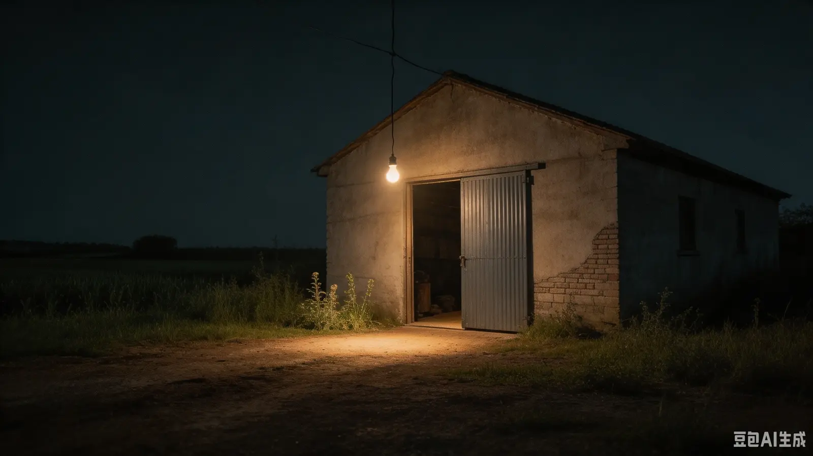
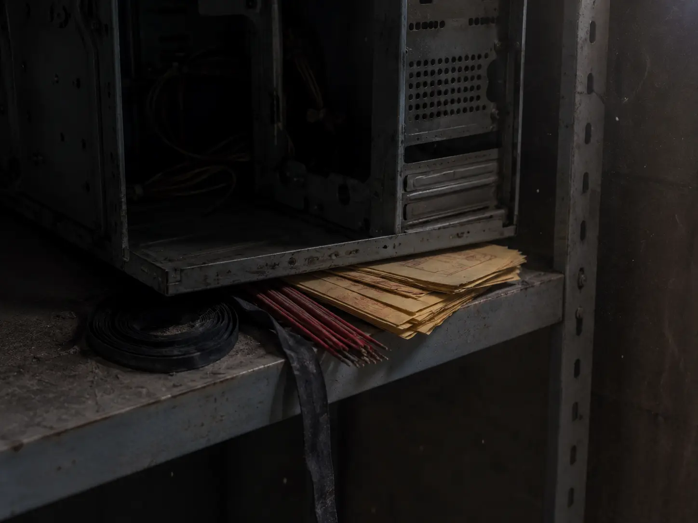

三下乡 › 青云村
村西仓库
GPS 最后坐标：29.6320°N, 111.7410°E。
现场
村西的尽头，一座平房仓库。铁皮门常年半掩，门口挂着一盏昏黄的灯泡。
仓库名义上是"设备存放处"。实际上，示范点用不上的旧货、待处理的东西，都堆在这里。
2019 年起，仓库由禾丰项目部直接管理，租赁合同五年一签（2024 年续租）。看管仓库的保安负责每天开关门、拔插网线。
07-19 下午，TIU 独自来这里核对备件清单。14:32 之后，他的手机离线，GPS 不再上报。
没有人看见他走出来。
货架最里层堆着两箱"待处理"的东西——一摞黄纸符咒、几把香、一卷黑布条，压在空机箱底下。没有单据，没有归属。
仓库里侧有一间隔间，门上加了一把链条锁，窗户从外面钉着木板——07-19 之后才有的。
07-19 之后的夜里，村里有人说，仓库后墙方向传来过鼓声，一下一下，极有节奏。报过警，查无此事。
（仓库照片摄于 07-26 深夜。铁皮门内侧加了一把新锁，钥匙在赵经理手里。）
夜间声响记录
| 时间 | 记录 | 方位 |
|---|---|---|
| 07-26 01:53 | 低频持续声响，约 40 分钟 | 仓库方向 |
| 07-26 02:17 | 有节奏的敲击声，约 8 分钟 | 隔间方向 |
| 07-26 02:25 | 敲击声停止 | —— |
| 07-27 03:11 | 低频声响，约 30 分钟 | 仓库方向 |
| 07-27 03:18 | 闷响的鼓声，一下一下 | 后墙方向 |
记录人：村西几户居民，各自记下的时间，拼在一起对上了。07-26 02:17~02:25 的敲击声，与后台五连改的时间完全重合。


仓库时间线
07-19 14:32 —— TIU 进入仓库，失联
07-19 23:47 —— 仓库电脑接入网络（微信网页版）
07-20 起 —— 网线白天被拔，仅夜间接通
07-26 02:17 —— 仓库电脑登录科联后台
门锁、网线、钥匙——所有"管理动作"都指向同一个人。